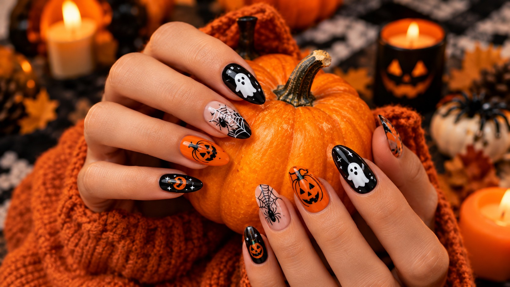

Halloween Nail Art Ideas 2026: 40 Spooky and Cute Designs to Try
Published October 9, 2026 · Updated October 9, 2026 · By EventBuzz Team

Your costume gets the photos, but your nails get the close-ups. Halloween 2026 falls on Saturday, October 31, which gives you a full weekend of parties — and plenty of time to wear a design you actually love. This guide collects 40 Halloween nail art ideas in four groups: spooky, cute, glam, and easy at-home designs for total beginners. You will also find the exact tools you need, honest budgets, mini step-by-step tutorials for three hero looks, and safe removal advice so your natural nails survive the season.
What You Need: Tools and Products (With Budgets)
You do not need a salon trolley. Most of the 40 designs below use the same small kit:
- Base coat and glossy top coat — the two products that decide how long any design lasts. Budget: $4–$8 / £3–£6 each.
- Core colours — black, white, pumpkin orange, blood red, and a nude or sheer pink base. Budget: $2–$6 / £2–£5 per bottle; a 5-colour Halloween set runs about $10–$15 / £8–£12.
- Detail tools — a fine nail art brush, two dotting tools, and striping tape. A beginner tool kit costs $5–$9 / £4–£7. No budget? A toothpick, bobby pin, and sticky tape do the same job.
- Optional upgrades — chrome powder ($5–$8), matte top coat ($5), glow-in-the-dark polish ($6–$9), nail stickers and water decals ($3–$6 per sheet), and press-on Halloween sets ($5–$12 / £4–£10).
- Removal basics — acetone-free remover for regular polish, pure acetone plus cotton pads and foil if you wear gel, cuticle oil for aftercare.
Total starter budget: about $20–$35 / £15–£28 covers every beginner and most intermediate designs in this list — less than a single salon set.
Spooky Designs (1–10)
For haunted-house energy and horror-movie fans. Dark bases, sharp details, maximum drama.
1. Dripping Blood Tips
Glossy nude or pale base with deep red polish dripped from the tips. Use a dotting tool to place drops, then drag them upward for a fresh, wet look. Seal with extra-glossy top coat.
2. Stitched Frankenstein Nails
Slime-green base, a jagged black hairline across the tip, and thin black "stitch" lines down one side. Add two tiny bolt dots near the cuticle.
3. Spider Web Accents
Black base with fine white or silver webs on two accent nails — exactly like the web nail in our hero photo. Draw three lines fanning from one corner, then connect with sagging curves.
4. Haunted Graveyard Silhouettes
Midnight-purple gradient sky, black tombstones, a crooked tree, and a tiny white moon. Best on longer nails where the scene has room.
5. Ghost Face Frights
Black nails with elongated white ghost faces — stretched oval eyes and wailing mouths, inspired by classic horror masks.
6. Vampire Fang Tips
Deep red French tips reshaped into two white fang points at the smile line. Subtle from a distance, wicked up close.
7. Creepy Clown Smiles
White base, red smile arcs, and black diamond eye shapes on accent nails. Glossy finish sells the circus-horror contrast.
8. Ouija Board Nails
Tan or nude base with tiny black letters, numbers, a sun and moon, and a planchette on the thumb. A fine brush or letter decals keep it readable.
9. Foggy Forest Nails
Grey ombre fading to black, with bare tree branches silhouetted across every nail. Matte top coat makes the fog look real.
10. Eyeball Nails
White base, coloured iris, black pupil, and fine red veins. One eyeball per hand is playful; ten is a statement.
Cute Designs (11–20)
Sweet, colourful, and party-friendly — these match the ghosts-and-pumpkins manicure in our hero image.
11. Cute Ghost Faces
White ghost blobs with rosy cheeks and happy eyes over black, orange, or pastel bases. The friendliest design of 2026 and the one everyone photographs.
12. Mini Jack-o'-Lanterns
Orange base, brown stem at the cuticle, and black triangle eyes with a toothy grin — one pumpkin per nail, just like the hero photo.
13. Candy Corn Stripes
Horizontal bands of white, orange, and yellow. Tape off each section or freehand with a steady brush. Works on every nail length.
14. Pastel Pumpkins
Pumpkin shapes in blush pink, lavender, and mint over a cream base. The soft-girl answer to October.
15. Friendly Bats
Tiny black bats with smiling faces over a peach or baby-blue sky, plus dotted stars. Adorable on short nails.
16. Cat Faces
Black cat heads with pink inner ears and whiskers, painted at the tips over a nude base. Pairs perfectly with a cat costume.
17. Candy Wrapper Colours
Alternating nails in wrapped-candy stripes — purple and green, orange and black, pink and silver — finished glossy like foil.
18. Ghost French Tips
Classic French manicure where each white tip becomes a wavy ghost hem with two dot eyes. Minimal skill, maximum compliments.
19. Pumpkin Spice Ombre
A warm gradient from cream through caramel to burnt orange, made with a makeup sponge. Add one tiny pumpkin on the ring finger.
20. Starry Night Dots
Sheer base sprinkled with tiny gold and silver stars and moons — use decals or a dotting tool with a shaky hand; it still looks deliberate.
Glam Designs (21–30)
For Halloween parties where the dress code is more cocktail than costume.
21. Black Chrome Nails
Black gel polished with silver chrome powder for a liquid-metal finish. Add one web accent nail to keep the theme.
22. Gold Web on Matte Black
Velvety matte black with fine metallic gold webs and a single gold spider. Understated and expensive-looking.
23. Blood-Red Velvet Nails
Deep red magnetic "cat-eye" gel that shifts in the light like velvet. The most requested salon look for Halloween night.
24. Crystal Skull Accents
Nude or black nails with one rhinestone skull per hand. Apply crystals with gel or nail glue over cured polish.
25. Pumpkin Gold Foil
Burnt orange base scattered with irregular gold foil flakes. No two nails alike, and foil hides imperfect application beautifully.
26. Smoky Quartz Marble
Black and grey water-marble swirls with silver veins. Drop polish into water, swirl with a toothpick, dip, and clean the edges.
27. Emerald Witch Nails
Deep emerald green with gold crescent moons and stars. Channels elegant witch energy without a single cartoon shape.
28. Rose-Gold Ghosts
Metallic rose-gold base with small white ghosts. The contrast reads festive, not childish.
29. Lace Corset Nails
Black base with fine white lace patterns along one edge — use lace stamping plates or water decals for clean results.
30. Midnight Glitter Fade
Black tips dissolving into silver glitter toward the cuticle, like falling stars. Sponge the glitter on for a soft gradient.
Easy at Home: Beginner Designs (31–40)
No art experience needed. Each of these uses two or three colours and tools you already own.
31. Dot Spiders
One large dot, one small dot, eight bent lines for legs. A toothpick is your brush. Put a single spider on each ring finger over orange or white.
32. Striped Witch Socks
Alternating stripes in green and black, or purple and orange. Sticky tape gives crisp lines — apply, paint, peel while wet.
33. Mummy Wrap Nails
White base with diagonal off-white and grey bandage stripes, leaving a gap for two black eyes. Wonky lines are part of the look.
34. Two-Tone Split Nails
Half orange, half black, split diagonally with tape. Add a white dot border along the seam if you feel fancy.
35. Sticker and Decal Sets
The zero-skill option: paint any base colour, apply Halloween water decals or stickers, seal with top coat. Ten minutes, salon-looking results.
36. Press-On Halloween Sets
Ready-painted themed press-ons with ghosts, webs, and pumpkins. Glue for a week of wear, adhesive tabs for one party. The fastest route in this guide.
37. Glow-in-the-Dark Tips
Any dark base with glow polish painted only on the tips. Charge under a lamp and watch them light up at the party.
38. Simple Moon Phases
Black nails with one moon phase per finger in white or silver — crescent, half, full, half, crescent across the hand.
39. Polka-Dot Pumpkins
Orange dots on a black base, each finished with a tiny green stem dot. It reads "pumpkin patch" without painting a single pumpkin.
40. Spooky Letter Nails
One letter per nail spelling BOO, EEK, or SPOOKY in white over black. Use a fine brush, letter decals, or a nail stamping plate.
Step by Step: 3 Hero Designs
These are the looks in our cover photo — cute ghosts, one spider-web accent, and mini jack-o'-lanterns. Total time: about 25 minutes for the full set.
Hero Design 1: Cute Ghosts (the white ghost nails)
- Shape, push back cuticles, and apply base coat.
- Paint two coats of black (or deep orange) polish. Let each coat dry 2 minutes.
- With white polish on a dotting tool, stamp an oval blob near the centre of the nail; drag the bottom edge into two or three wavy points for a floating hem.
- Add two black dot eyes and a small oval mouth. A pink dot on each "cheek" makes it cute, not scary.
- Seal with glossy top coat once fully dry.
Hero Design 2: Spider Web Accent
- Apply base coat, then two coats of nude or pale pink polish.
- With a fine brush or toothpick in black, draw three lines fanning from the top corner of the nail.
- Connect the lines with three shallow curves that sag toward the centre — that sag is what makes it read as a web.
- Add a tiny spider: one dot hanging from a thread line at the web's edge.
- Finish with glossy top coat. Keep this to one or two accent nails so the set stays balanced.
Hero Design 3: Mini Jack-o'-Lanterns
- Base coat, then two coats of pumpkin-orange polish.
- Paint a short brown stem at the cuticle with the edge of the brush.
- With black polish on a toothpick, draw two triangle eyes and a zigzag smile. Let faces vary slightly — real pumpkins do.
- Optional: one thin vertical line of slightly darker orange on each side for pumpkin ridges.
- Glossy top coat for that fresh-carved shine.
Beginner rule: paint your dominant hand first while your patience is fresh, keep a small brush dipped in remover beside you for edge clean-up, and remember that top coat hides a multitude of sins.
How Long Do Halloween Designs Last?
Regular polish: 3–7 days with a proper base and top coat; reapply top coat every two days to stretch it. Detailed art chips first at the tips, so "cap" the free edge with each layer. Gel polish: 2–3 weeks, easily covering the whole Halloween weekend and beyond. Press-ons: 3–10 days with glue, 1–3 days with adhesive tabs. Stickers and decals under top coat last as long as the polish beneath them.
If you want the design only for October 31, regular polish or press-ons are the smart choice. Book gel for mid-October if you are attending several events.
Removal and Nail Safety Tips
- Regular polish: soak a cotton pad in acetone-free remover, hold for 20–30 seconds, then wipe. Pressing and waiting beats scrubbing.
- Gel: file the shiny top layer lightly, soak pads in acetone for 10–15 minutes, and push softened polish with a wooden stick. Never peel or pry gel — it lifts layers of your natural nail with it.
- Press-ons: soak in warm soapy water with a drop of oil for 10 minutes and ease them off. Save unbroken sets for next year.
- Aftercare: wash, moisturise, and massage in cuticle oil. Dark polishes can stain — a base coat is non-negotiable under black, red, and orange.
- Take breaks: give nails a polish-free day or two between sets if you are cycling through multiple October designs, and never apply art over damaged or painful nails.
Salon or DIY? A USA and UK Note
In the USA, a manicure with simple Halloween art typically runs $35–$70, with detailed hand-painted sets at $60–$120 in major cities; book at least a week ahead, because the last week of October fills first. In the UK, expect roughly £25–£45 for a gel manicure with simple art and £35–£80 for detailed Halloween sets, with London at the top of the range. Salons earn their fee on intricate designs (graveyards, Ouija letters, chrome work); for the beginner and cute sections above, DIY costs under £15 / $20 in supplies you will reuse all year. A good middle path: salon for a gel base colour, then add your own stickers, dots, and webs at home.
Frequently Asked Questions
What are the easiest Halloween nail designs for beginners?
Ghost French tips, dot spiders, candy corn stripes and star decals are the easiest. They use one or two colours, a dotting tool or toothpick, and forgive wobbly lines — ideal first designs for Halloween 2026.
How long do Halloween nail designs last?
Regular polish designs last about 3 to 7 days with a good top coat. Gel polish designs typically last 2 to 3 weeks. Press-on Halloween nails last 3 to 10 days depending on whether you use glue or adhesive tabs.
How much does Halloween nail art cost at a salon?
In the USA, simple Halloween nail art usually adds $5 to $15 per nail set on top of a manicure, with full detailed sets costing $60 to $120. In the UK, expect roughly £35 to £80 for a full Halloween set depending on detail and region.
Can I do Halloween nail art without special tools?
Yes. A toothpick or bobby pin works as a dotting tool, striping tape or sticky tape creates clean lines, and a small makeup sponge makes gradients. Most of the beginner designs in this guide need only two polish colours and a toothpick.
How do I remove Halloween nail art safely?
For regular polish, soak a cotton pad in acetone-free remover, hold it on the nail for 20 to 30 seconds, then wipe gently. For gel, soak with acetone pads for 10 to 15 minutes and push softened polish off with a wooden stick — never peel or force gel off, as that strips the natural nail.
Are press-on Halloween nails a good option?
Press-ons are the fastest, cheapest low-commitment option for Halloween 2026. A themed set costs a few dollars, applies in ten minutes, and removes without acetone. Choose glue for a full week of wear or adhesive tabs for one party night.
Conclusion
Forty designs, one Saturday night: Saturday, October 31, 2026. Pick a spooky set if you are haunting, a cute set if you are hosting, glam if you are dressing up rather than costuming — or start with the beginner list and a toothpick tonight. Match your nails to the rest of your look with our Halloween beauty guides:
Happy haunting — and may your top coat dry before the party starts!